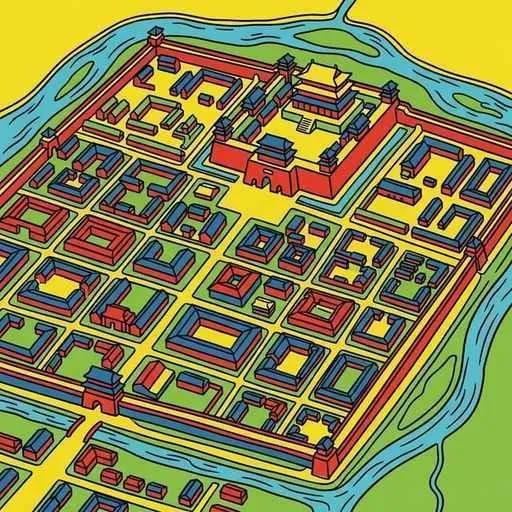
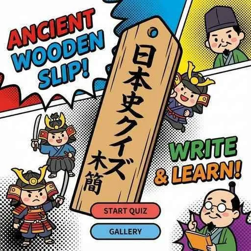
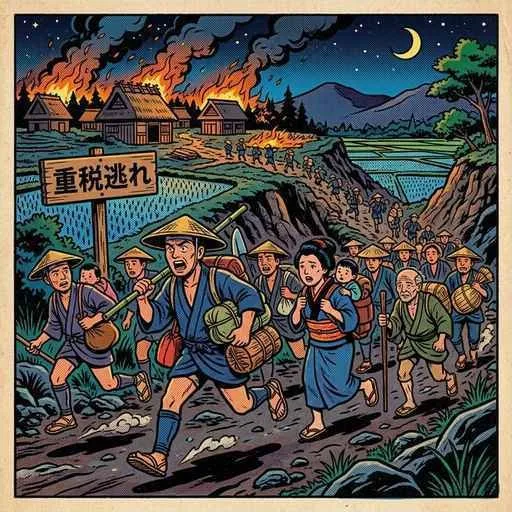

7. 平城京の生活と文化
大宝律令が制定され、日本が「律令国家」として歩み始めた直後、都はさらに新しく巨大な場所へと移されます。710年に誕生した「平城京」です。今回は、平城京でのきらびやかな役人たちの生活と、対照的に重税に苦しむ農民たちの現実、そして現代まで語り継がれる『古事記』『日本書紀』『万葉集』などの古代文学の誕生について解説します！
1. 平城京への遷都と唐の「長安」
710年、元明天皇（げんめいてんのう）は、それまでの藤原京から、奈良の地に新しく造営した大都市平城京（へいじょうきょう）へ都を移しました（語呂合わせ「なんと（710）立派な平城京」で覚えましょう！）。
平城京は、当時世界で最も繁栄していた中国（唐）の都である長安（ちょうあん）を徹底的にモデルにして作られました。南北約4.8km、東西約4.3kmに及ぶ広大な敷地を持ち、中央を通るメインストリート「朱雀大路（すざくおおじ）」を境にして、東側を「左京」、西側を「右京」と呼び、道路が碁盤の目のように規則正しく区画された計画都市でした。
図1：唐の都にならい、碁盤の目のように整備された大規模な都「平城京」

図2：平城京の都市計画のモデルとなった唐の巨大な国際都「長安」
① 役人の仕事と「木簡」
平城京の北部には、天皇の住まいや様々な役所が集まる「平城宮（へいじょうきゅう）」があり、数千人の貴族や役人が働いていました。当時、文字を記録するための紙はきわめて高価で貴重なものでした。そのため、役人たちは日々の帳簿や、地方から送られてくる税の荷札、伝達事項の記録に、細長い木の板である木簡（もっかん）を使用しました。この木簡は、削れば何度も再利用できるため大変実用的であり、当時の行政の実態を知るための貴重な考古学史料となっています。

図3：紙の代わりに文字を書き記し、荷札や帳簿として活用された「木簡」
2. 重税による農民の窮乏と「逃散」
きらびやかな平城京の生活とは裏腹に、地方の農民たちの暮らしは限界に達していました。前単元で触れた「租・調・庸」や「防人」などの負担に加え、都の建設や労働のために呼び出される人々が多く、自分の田んぼを耕す時間が奪われていきました。
この結果、生活に行き詰まった農民たちが、自分たちに与えられた口分田を捨てて住み慣れた土地から逃げ出す逃散（ちょうさん）が全国で相次ぎました。これにより、口分田が荒れ果て、政府の税収が激減するという深刻な問題が発生し始めました。

図4：過酷な税から逃れるため、すべてを捨てて居住地から逃亡した農民（逃散）の様子
① 山上憶良の「貧窮問答歌」
当時の農民たちの悲惨な生活実態をありのままに活写したのが、歌人の山上憶良（やまのうえのおくら）が詠んだ「貧窮問答歌（ひんきゅうもんどうか）」です（『万葉集』に収録）。
この歌では、寒さに震えながら食べ物もなく、ボロボロの衣服で過ごす貧しい親子と、そこに税を取り立てにくる情け容赦ない里長（地方の役人）の様子が対話形式で描かれており、律令国家の税制度がいかに農民たちを追い詰めていたかを教えてくれます。
3. 歴史書と文学の誕生（記紀・風土記・万葉集）
奈良時代には、天皇や国家の権威を高め、日本の歴史を国の内外にアピールするため、また地方の実態を把握するために、数々の歴史書や地誌が編纂されました。同時に、日本独自の文学も大きく花開きました。
① 国家の歴史書『古事記』と『日本書紀』（記紀）
天武天皇の発案から始まり、国の成り立ちや天皇の家系の正当性を記録するために、以下の2つの歴史書が作られました。これらをあわせて「記紀（きき）」と呼びます。
- 古事記（こじき／712年完成）：稗田阿礼（ひえだのあれ）が暗記していた神話や歴史を、太安万侶（おおのやすまろ）が漢字を使って和風の文章で書き記した、日本最古の歴史書です。
- 日本書紀（にほんしょき／720年完成）：天武天皇の息子である舎人親王（とねりしんのう）らが編纂した、中国の公式な歴史書にならって本格的な漢文で年代順に記された正式な歴史書です。
図5：日本の神話から歴代天皇の事績までを記述した日本最古の歴史書『古事記』のイメージ
図6：対外的な公式記録として漢文で編纂された『日本書紀』のイメージ
② 地方の報告書『風土記』
713年、政府は地方の国ごとに、その土地の自然環境、産物（特産品）、土地の肥え具合、そして古くから伝わる昔話や地名の由来などを調査して提出させました。この報告書を風土記（ふどき）と呼びます。現在では、島根県の「出雲国風土記（いずものくにふどき）」などがほぼ完全な形で残っています。
図7：各地の特産物や神話・伝承などを網羅した地理報告書『風土記』
③ 日本最古の和歌集『万葉集』
奈良時代の終わりごろにまとめられた、約4500首の和歌を収録した日本最古の和歌集が万葉集（まんようしゅう）です（大伴家持らが編集に関わったとされます）。当時の文字はまだ「漢字」しかなかったため、日本語の発音を漢字の音を借りて表す「万葉仮名（まんようがな）」という独自の工夫で記述されました。
万葉集の最大の特徴は、天皇や貴族の美しい和歌だけでなく、厳しい国境警備につく兵士たちが詠んだ「防人歌（さきもりうた）」や、一般の農民たちの生活を詠んだ東歌（あずまうた）など、様々な身分の人々の素朴で感情豊かな歌が収められている点にあります。
図8：身分を問わず全国から歌が集められた、日本最古の和歌集『万葉集』のイメージ
🔥 テストに出る！「奈良時代の文化・文学」徹底整理
奈良時代の文学は記述や選択問題の宝庫です。以下のポイントを絶対に覚えましょう！
① 『古事記』と『日本書紀』の比較
| 書物名 | 完成年 | 主な編纂者 | 特徴・記述スタイル |
|---|---|---|---|
| 古事記 | 712年 | 稗田阿礼、太安万侶 | 日本最古の歴史書。語り言葉を書き起こした和風記述。 |
| 日本書紀 | 720年 | 舎人親王ら | 漢文による公式な歴史書。年代順（編年体）で記述。 |
② 『風土記』と『万葉集』の超重要キーワード
・風土記：各地方の地理・産物・神話伝承を報告させたもの（出雲国風土記が有名）。
・万葉集：日本最古の和歌集。漢字を音読みに使った「万葉仮名」で書かれた。
・山上憶良：『万葉集』に農民の極貧生活を描いた「貧窮問答歌」を詠んだ歌人。
・防人歌：厳しい警備を課せられた兵士たちの、家族や故郷を想う切ない歌。